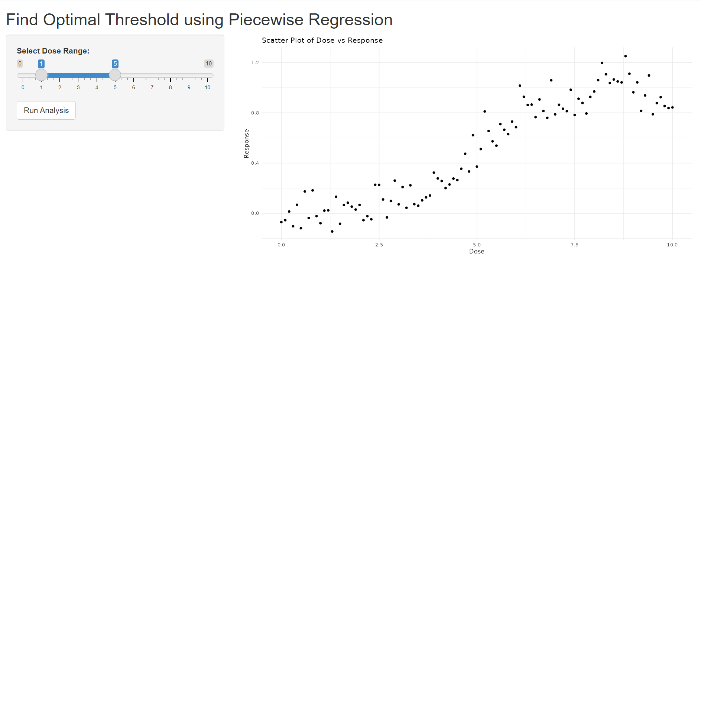

if(!require("tidyverse")) install.packages("tidyverse")
if(!require("shiny")) install.packages("shiny")
library(tidyverse)
library(shiny)13 Change Point finding
One method to find the threshold is to perform piecewise regression repeatedly at each threshold point and find the optimal model. Here’s a brief explanation of piecewise regression:
| threshold points (piecewise regression) | codes |
|---|---|
| total | Resp = α + β1 · Dose + β2 ·( Dose – Ɵ) + + Ɛ0 |
| If Dose < Ɵ | Resp= α + β1 · Dose + Ɛ0 |
| If Dose > Ɵ | Resp= α - β2 ·Ɵ +( β1 + β2 )· Dose + Ɛ0 |
| model selection | minimal AIC value |
13.0.1 Data Generation
We generated some sample data. Let’s consider a scenario where exposure to a certain substance (Dose) affects health (Resp), and assume there’s a threshold level.
set.seed(0)
dose <- seq(0,10, 0.1)
length(dose)[1] 101pb<-c(rnorm(50, 0, 0.001), rnorm(30, 0, 0.01), rnorm(10, 0.1, 0.05),rnorm(11, -0.1, 0.05))
resp <-1/(1+exp(-(dose-5)))+rnorm(length(dose), 0, 0.1)+pb
plot(dose, resp, xlab='Dose', ylab='Response', cex.lab=1.5, cex.axis=1.5, cex.main=1.5, cex.sub=1.5)
cohort<-data.frame(dose, resp, pb)13.1 Trying Out Hypothetical Threshold Values
It looks like there might be a threshold between 1 and 5. Let’s calculate the expected matrix (outdata) for some hypothetical values. We’ll get the intercept, beta for before threshold, and its p-value, beta for post threshold and its p-value, and the AIC value for each threshold. First, let’s try thresholds at 1 and 5:
cpdose <- ifelse(dose -1 >0, dose -1, 0)
cpm <- glm(resp ~ dose + cpdose)
summary(cpm)$aic[1] -92.20184cpdose <- ifelse(dose -5 >0, dose -5, 0)
cpm <- glm(resp ~ dose + cpdose)
summary(cpm)$aic[1] -86.9744Which assumption improves model fit? It turns out the threshold at 1 is better. We should also compare it with thresholds like 2 and 2.5. Let’s perform repeated analysis for this.
We created a function for the above model:
thr_fun <- function(thres){
cpdose <- ifelse(dose - thres >0, dose - thres, 0)
cpm <- glm(resp ~ dose + cpdose)
aic <- summary(cpm)$aic
data.frame(
'threshold' = thres,
'aic' = aic)
}Let’s set the range to test:
# 이게 어떤 의미 일까요?
dose[which(dose == 1):which(dose == 5)] [1] 1.0 1.1 1.2 1.3 1.4 1.5 1.6 1.7 1.8 1.9 2.0 2.1 2.2 2.3 2.4 2.5 2.6 2.7 2.8
[20] 2.9 3.0 3.1 3.2 3.3 3.4 3.5 3.6 3.7 3.8 3.9 4.0 4.1 4.2 4.3 4.4 4.5 4.6 4.7
[39] 4.8 4.9 5.0Now, we’ll run the analysis repeatedly:
simul_list <- list()
simul_list <- lapply(dose[which(dose ==1):which(dose ==5)], thr_fun
)Next, let’s combine the results into a data frame:
simul_dat <- do.call(rbind, simul_list)Let’s plot the results:
library(ggplot2)
opt.thres <- simul_dat$threshold[which.min(simul_dat$aic)]
simul_dat %>%
ggplot(aes(x = threshold, y = aic)) +
geom_line() +
geom_vline(xintercept = opt.thres) +
geom_text(x = opt.thres + 0.8, y = -90, color = 'red',
label = paste0(round(opt.thres, 3), '점에서 최소 AIC를 보입니다.' )) +
theme_minimal()
It shows that the optimal threshold is at 2.1.
thres = 2.1
f_cpdose <- ifelse(dose - thres >0, dose - thres, 0)
f_cpm <- glm(resp ~ dose + f_cpdose)prepwlm <- predict(f_cpm)
scaleFUN <- function(x) sprintf("%.2f", x)
cohort %>%
ggplot(aes(x= dose, y = resp)) +
geom_point() +
theme_minimal() +
scale_y_continuous(labels = scaleFUN) +
geom_line(aes(y = prepwlm), color ='red')
13.2 Quiz
Assume there is a change point between doses of 6 and 10. Perform a repeated analysis to find the change point that results in the lowest AIC value. Please submit your code.
13.3 Quiz for Shiny app for threshold

for global
# Load required libraries
library(shiny)
library(ggplot2)
# Generate sample data
set.seed(0)
dose <- seq(0, 10, 0.1)
pb <- c(rnorm(50, 0, 0.001), rnorm(30, 0, 0.01), rnorm(10, 0.1, 0.05), rnorm(11, -0.1, 0.05))
resp <- 1 / (1 + exp(-(dose - 5))) + rnorm(length(dose), 0, 0.1) + pb
cohort <- data.frame(dose, resp, pb)for UI
# Define UI
ui <- fluidPage(
titlePanel("Find Optimal Threshold using Piecewise Regression"),
sidebarLayout(
sidebarPanel(
sliderInput("range", "Select Dose Range:",
min = 0, max = 10, value = c(1, 5), step = 0.1),
actionButton("run", "Run Analysis")
),
mainPanel(
plotOutput("initialPlot"),
plotOutput("aicPlot"),
plotOutput("thresholdPlot")
)
)
)for server
# Define server logic
server <- function(input, output) {
thr_fun <- function(thres) {
cpdose <- ifelse(dose - thres > 0, dose - thres, 0)
cpm <- glm(resp ~ dose + cpdose)
aic <- summary(cpm)$aic
data.frame('threshold' = thres, 'aic' = aic)
}
analyze <- eventReactive(input$run, {
range <- seq(input$range[1], input$range[2], by = 0.1)
simul_list <- lapply(range, thr_fun)
simul_dat <- do.call(rbind, simul_list)
simul_dat
})
output$initialPlot <- renderPlot({
ggplot(cohort, aes(x = dose, y = resp)) +
geom_point() +
labs(title = "Scatter Plot of Dose vs Response", x = "Dose", y = "Response") +
theme_minimal()
})
output$aicPlot <- renderPlot({
simul_dat <- analyze()
opt.thres <- simul_dat$threshold[which.min(simul_dat$aic)]
ggplot(simul_dat, aes(x = threshold, y = aic)) +
geom_line() +
geom_vline(xintercept = opt.thres, color = 'blue') +
geom_text(x = opt.thres + 0.2, y = min(simul_dat$aic), color = 'red',
label = paste0("Optimal Threshold: ", round(opt.thres, 2))) +
labs(title = "AIC Values for Different Thresholds", x = "Threshold", y = "AIC") +
theme_minimal()
})
output$thresholdPlot <- renderPlot({
# Quiz
# fill the code
})
}